UC San Diego, ECE 285: Deep Generative Models · Spring Quarter 2026
3D Diffusion Policy (DP3) achieves strong visuomotor manipulation performance using a deliberately simple point cloud encoder: a per-point MLP with global max pooling, trained end-to-end from demonstrations. Prior work shows that richer supervised 3D encoders (PointNet++, PointNeXt) consistently hurt DP3 performance in the low-data regime. This project investigates whether a self-supervised 3D encoder can do better.
The contribution is entirely an integration experiment. We take the pretrained Point-JEPA checkpoint as-is, freeze it, and drop it directly into the DP3 pipeline as an encoder replacement, adding only a new PointJEPAExtractor module, a Hydra config, and Python 3.8 compatibility patches. No modifications were made to either the Point-JEPA or DP3 codebases beyond this. Point-JEPA is a joint-embedding predictive architecture pretrained on ShapeNet-55 that predicts abstract latent representations of masked spatial regions, encouraging global geometric structure capture. We evaluate the frozen encoder at three projection dimensionalities (64, 128, 256) on three Adroit dexterous manipulation tasks with 10 expert demonstrations each.
Hammer
Door
Pen
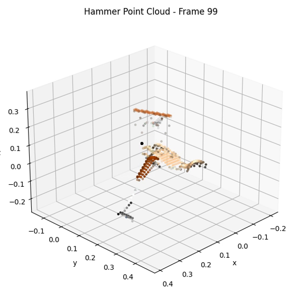
Hammer (point cloud)
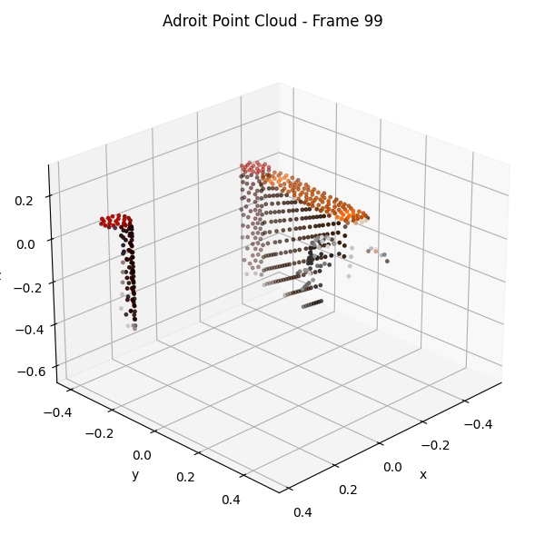
Door (point cloud)
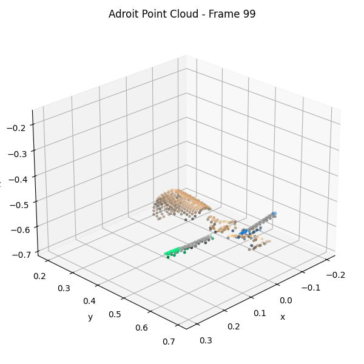
Pen (point cloud)
The policy observes only the 512-point xyz point cloud and 24-dim proprioceptive state, not the RGB image. The point clouds capture hand and object geometry but lack the visual detail of RGB.
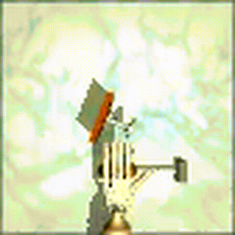
Hammer (cost 0.95)
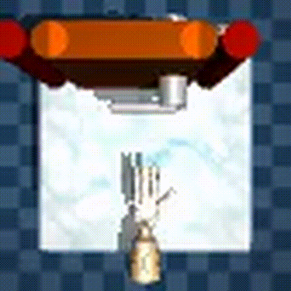
Door (score 0.65)
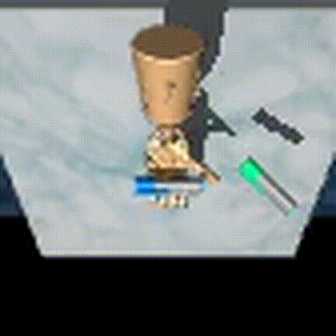
Pen (score 0.80)
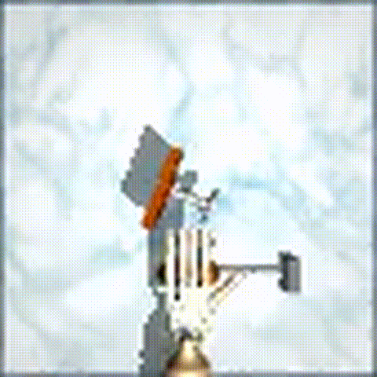
Hammer, JEPA-128 (score 0.80)
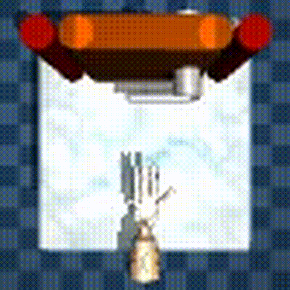
Door, JEPA-64 (score 0.70)
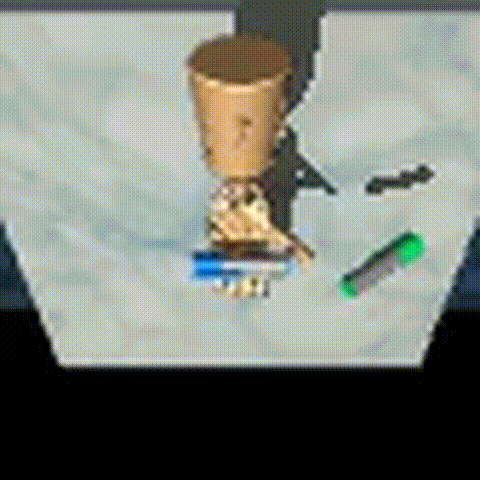
Pen, JEPA-256 (score 0.40)
| Model | dout | Hammer | Pen | Door |
|---|---|---|---|---|
| DP3 (baseline) | 64 | 0.950 | 0.800 | 0.650 |
| JEPA-64 | 64 | 0.450 | 0.250 | 0.700 |
| JEPA-128 | 128 | 0.800 | 0.375 | 0.600 |
| JEPA-256 | 256 | 0.500 | 0.400 | 0.650 |
Peak test_mean_score (fraction of 20 rollouts succeeding) across 3000 training epochs. JEPA-64 is the only model across all tasks and variants to strictly exceed the baseline's peak, on door (+5%). Results are otherwise mixed.
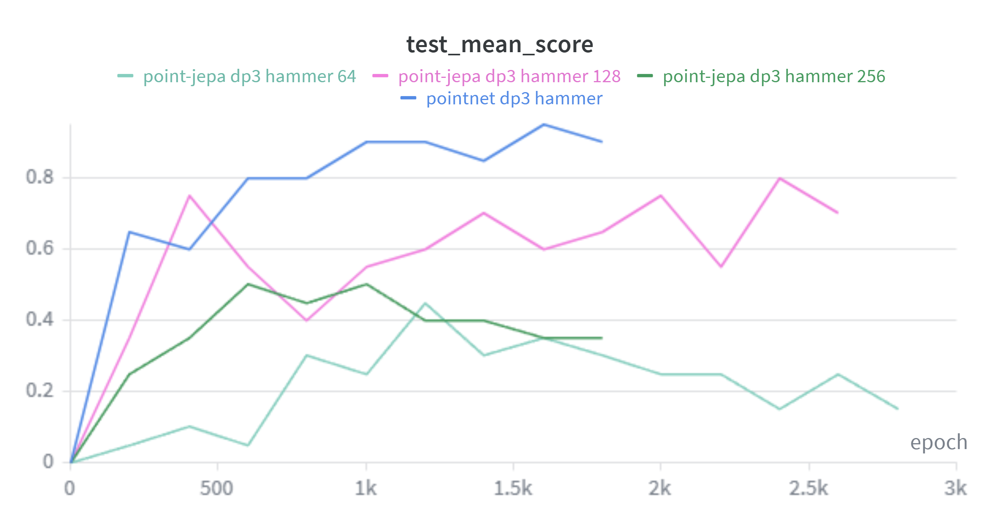
Test success rate over training
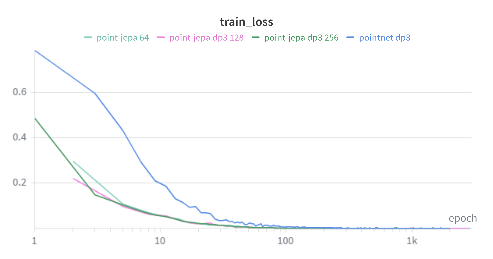
Diffusion loss (log scale)
All JEPA variants converge to near-zero diffusion loss within 20-30 epochs vs. hundreds for the baseline, yet the baseline achieves task success far earlier. JEPA-128 eventually reaches 0.80 but the baseline stays at 0.95.
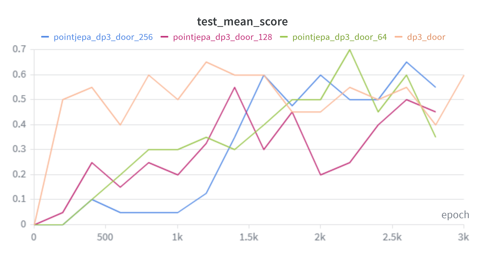
Test success rate over training
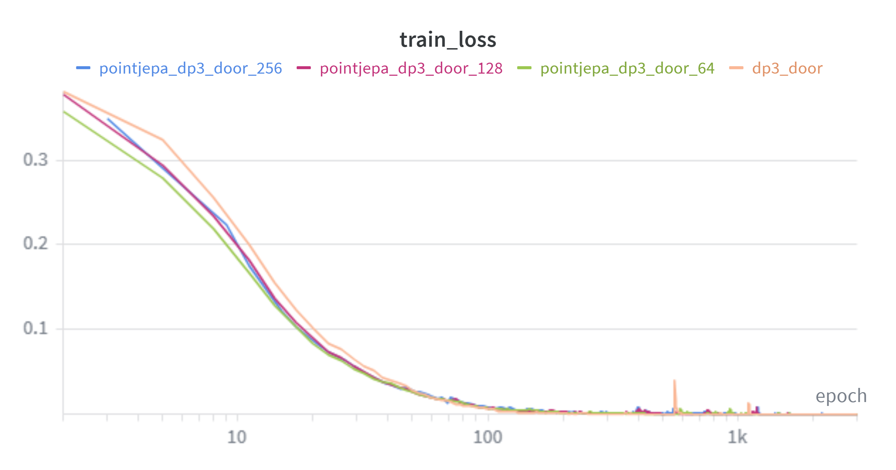
Diffusion loss (log scale)
JEPA-64 eventually reaches 0.70 at epoch 2200, surpassing the baseline's peak of 0.65. All four runs converge to nearly identical diffusion loss, so loss is an unreliable proxy for task performance here.
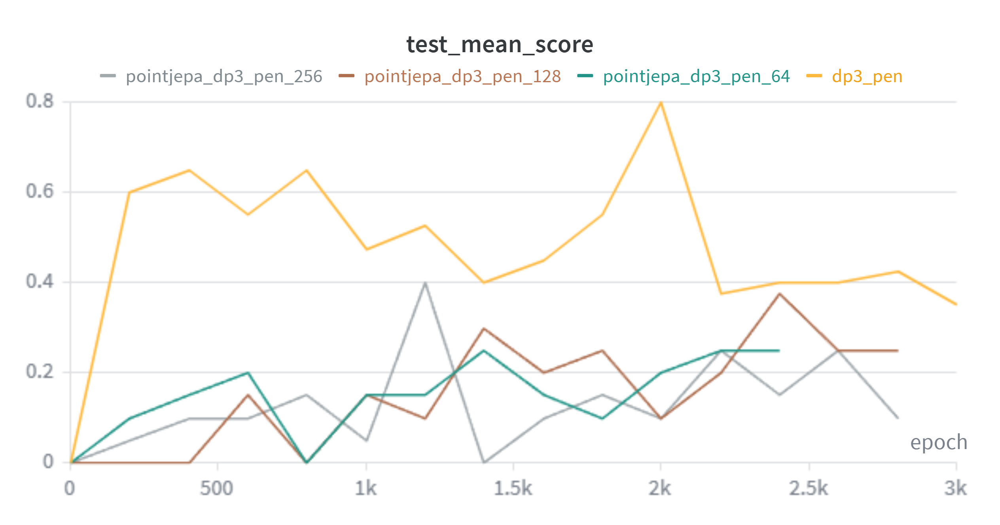
Test success rate over training
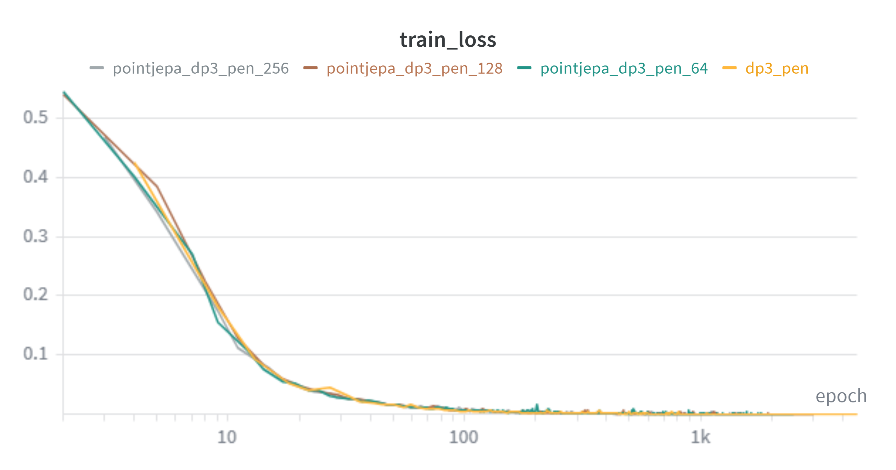
Diffusion loss (log scale)
All JEPA variants substantially underperform (peak 0.25-0.40 vs. 0.80 baseline). Identical diffusion loss curves but very different success rates confirm that loss is not a reliable policy quality indicator when encoder alignment is the bottleneck.
Point-JEPA's authors explicitly note its emphasis on global over local features as a limitation. Our results map directly onto this: the performance ordering corresponds precisely to how much global vs. local geometric reasoning each task requires.
The ShapeNet domain gap is also a factor: Point-JEPA was pretrained on clean, normalized CAD objects, while Adroit point clouds are in robot workspace coordinates and include the robot hand alongside the object.